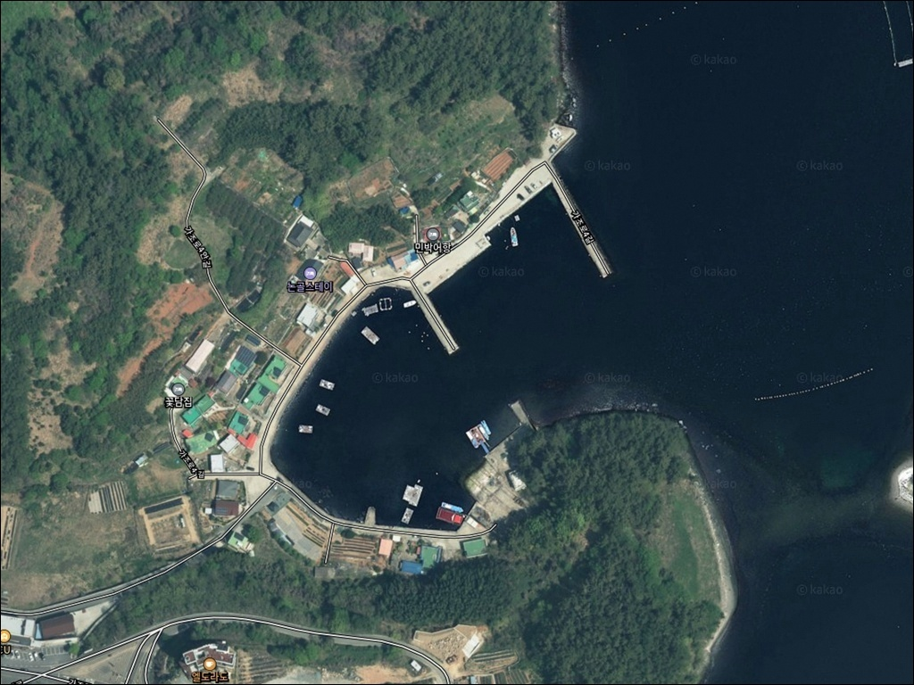
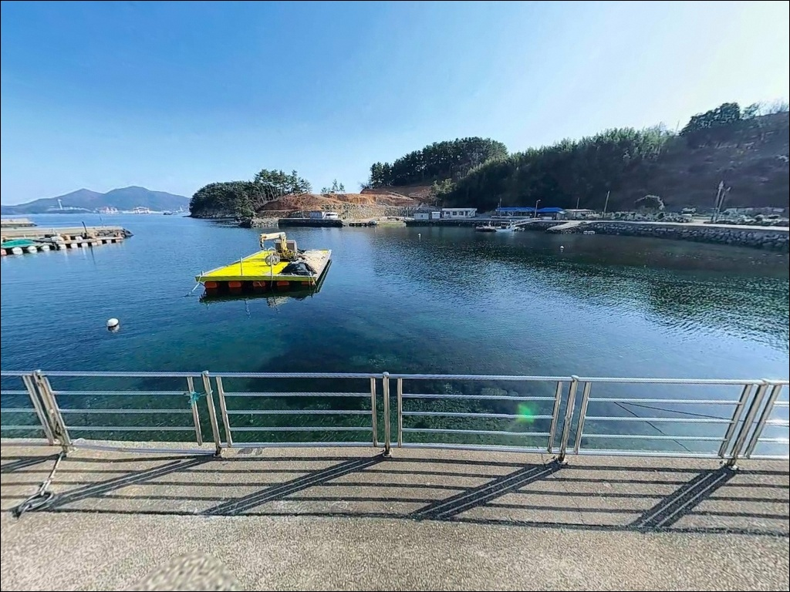
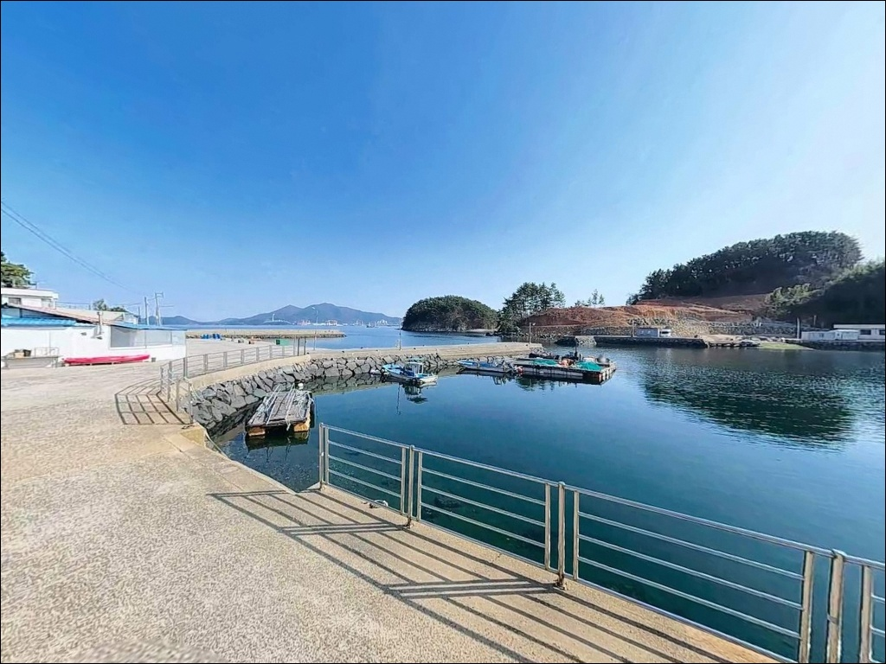
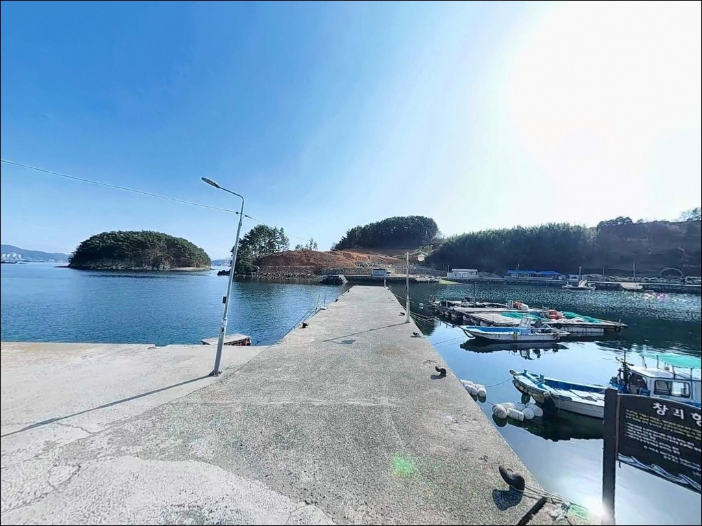
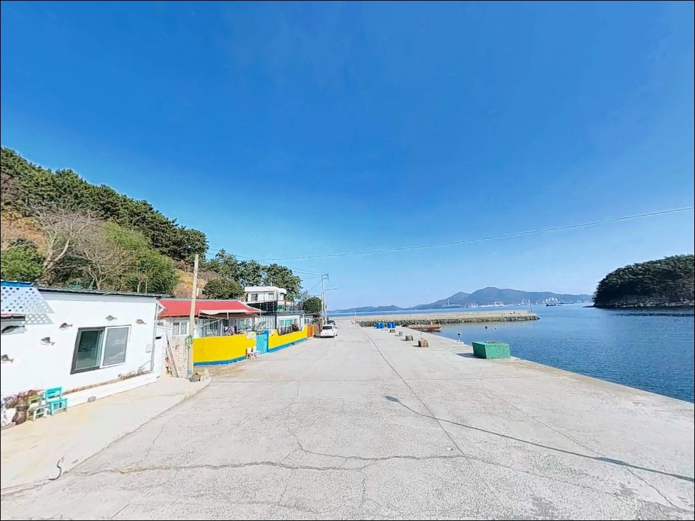
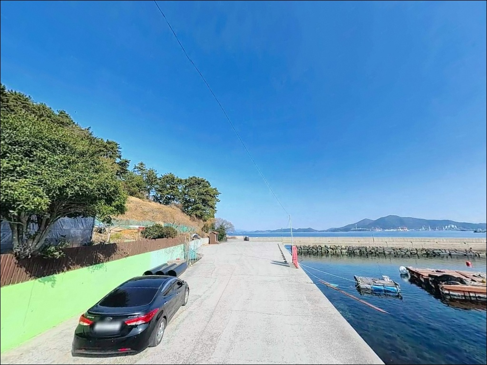
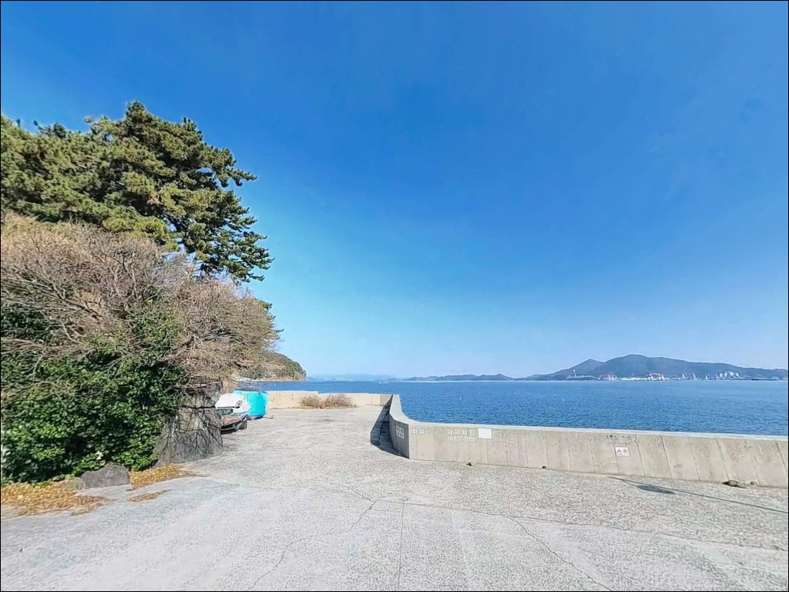
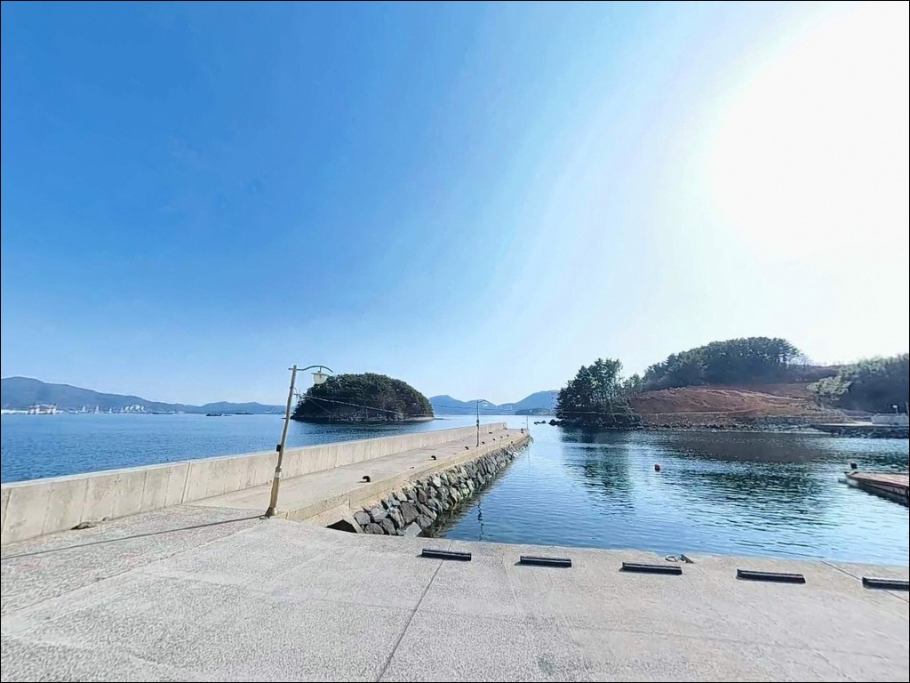
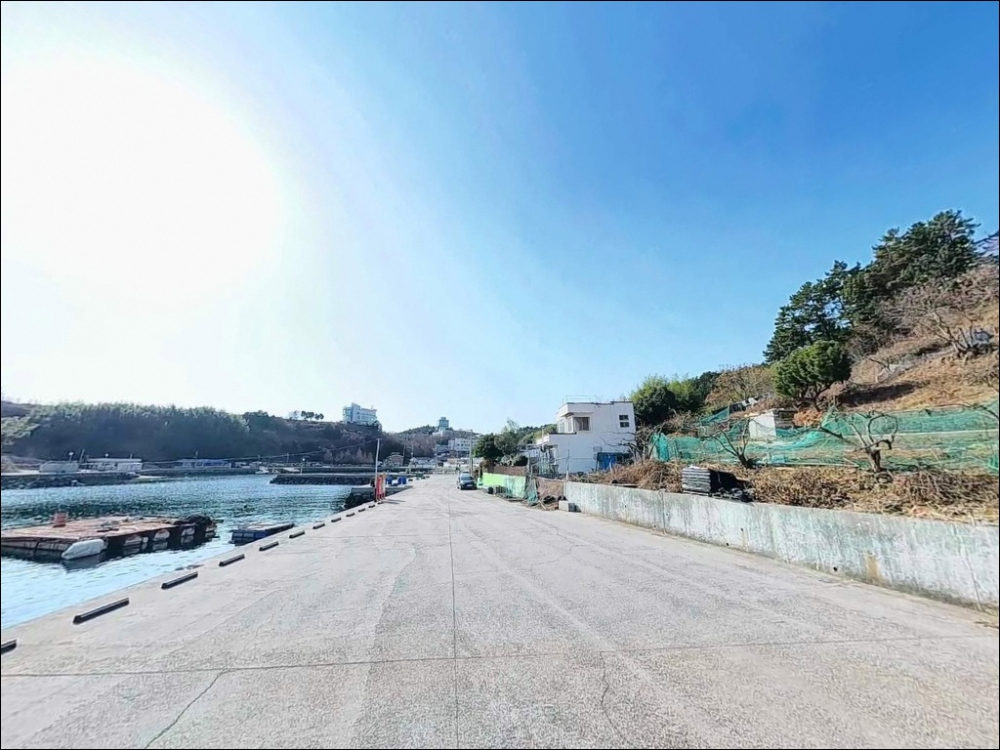

내항 수심 1m와 외항 10m 드롭 지형, 거제 창외항 방파제 낚시
이 페이지에는 광고(제휴 링크 포함)가 있으며, 광고 링크를 통해 구매하면 운영자가 판매 수익 또는 수수료를 받을 수 있습니다. 포인트 사진: 카카오맵 스카이뷰·로드뷰. 이 페이지의 지도·사진 이미지는 카카오맵의 실제 서비스 이미지와 다를 수 있습니다.


포인트 안내
창외항
경남 거제시 사등면 창호리 1983-4
창외항은 내항과 외항의 수심 차이가
큰 포인트입니다.
내항 본항 구역은 수심이 1m 내외에 머무는 반면,
방파제 끝단 외항 쪽은
8~10m까지 급격히 깊어지는 드롭 구간이
형성되어 있습니다.
자리 선택을 잘못하면 채비가 바닥에 끌리거나
원하는 수심층을 공략하지 못하는 상황이
반복될 수 있습니다.
이 글은 창외항의 방파제 구조,
진입 환경, 차박 여건, 낚시 스타일별
적합 자리 기준에 집중합니다.
조황 단정이나 특정 어종 보장은
이 글의 범위에 포함되지 않습니다.

1. 진입 동선과 포인트 접근성
창외항은 가조연육교를 통해
거제 본도 사등면과 연결된 가조도 내에 위치합니다.
가조로를 따라 창호리 방향으로 진입하면
비포장 구간 없이 항까지 도달할 수 있습니다.
도로 폭은 1차선~2차선 구간이 혼재하지만
포장 상태가 양호하여
승용차와 소형 SUV 기준 진입에 무리가 없습니다.
방파제 폭이 넓은 편이라
차량을 낚시 자리 바로 옆에 세우는
이른바 차옆낚시 여건이 잘 갖춰져 있습니다.
방파제 끝단 부근까지 차량 진입과 회차가 가능하며,
방파제 입구 주차장과 항 내부 공터도
주차 후보로 활용할 수 있습니다.
거가대교 방면에서 접근할 경우
거가대교 → 장목면 → 고현 → 사등면 → 가조연육교 → 창호리 순으로 이동합니다.
통영 방면에서는
통영IC → 신거제대교 → 사등면 → 가조연육교 → 창호리 경로가 기본입니다.

2. 차박 환경과 야간 체류 여건
창외항은 방파제 폭이 넓고
차량을 낚시 자리 옆에 주차할 수 있어
낚시를 마친 뒤 차에서 하룻밤 머무는
스텔스 차박 용도로 구조가 잘 맞습니다.
항 입구 주차장과 방파제 외측 공터 중
민가와 거리가 있는 쪽을 선택하면
프라이버시 확보가 수월합니다.
창호리는 소규모 어촌 마을로
야간 차량 통행이 적은 편입니다.
마을 도로변에 가로등이 일부 설치되어 있어
완전한 암흑 환경은 아니지만,
방파제 외곽 구간은 개인 조명 의존도가 높습니다.
헤드랜턴은 기본 지참 장비로 챙겨야 합니다.
외항 노출 구조 특성상 남향에서 오는
바람 영향을 직접 받는 편입니다.
기상 변화 시 파도와 바람이 빠르게 세질 수 있으니
차박 당일 저녁 기상청 해상예보를
다시 한번 확인하는 것이 기본입니다.


3. 주변 편의시설 및 인프라 현황
창호리 내에 CU 가조도점이 위치하여
기본 먹거리와 음료 보급이 가능합니다.
같은 방향으로 편리한 마트(가조도점)도 운영 중으로
낚시 미끼도 현지에서 구입할 수 있습니다.
다만 화요일은 휴무이므로
방문 요일에 따라 사전 확인이 필요합니다.
방파제 입구에 간이화장실이 설치되어 있습니다.
사등면 소재지 방향으로 이동하면
대형 마트와 낚시점을 이용할 수 있습니다.
통큰낚시 거제점(거제대로 5501)은
장비 보충과 현지 조황 정보 확인이 동시에 가능한
거제 방면 출조의 기점 역할을 합니다.
응급 상황 발생 시 거제 고현동 일대
종합병원까지 차량 20~25분 거리입니다.
연료는 가조연육교 입구 방향 주유소를
이용하는 것이 동선상 효율적입니다.

4. 방문 전 반드시 확인할 사항
창외항은 내항 수심이 낮은 편이라
만조 전후 타이밍이 낚시 가능 여부를 크게 좌우합니다.
바다타임에서 가조도 기준 물때를 확인하고
초들물부터 중날물까지 시간대를 중심으로
출발 일정을 맞추는 것이 기본 판단 기준입니다.
가조도는 11월 이후 바람 체감온도 변화가 큰 해양성 기후입니다.
기상청 해상예보와 파고 정보를
출조 당일 아침 재확인하는 습관이 필요합니다.
파고 2m 이상 조건에서는 외항 방파제 끝단 진입을 피하는 것이
기본 안전 수칙입니다.
석축 방파제 구조상 젖은 면이 미끄럽습니다.
안전화와 구명조끼는 낚시 내내 착용하고,
야간에는 헤드랜턴을 반드시 지참합니다.
내항은 어선 출입이 있는 공간이므로
계류 시설 앞 주차와 낚시 구역은 구분해야 합니다.

외항 드롭 구간이 만드는 낚시 조건
창외항 방파제는 석축 구조로 쌓인 외항과
콘크리트 수직벽 구조의 내항이 명확히 구분됩니다.
외항 끝단은 수심이 8~10m까지 이어지며,
선박이 드나드는 수로 구간은
준설로 4~5m 수심을 유지합니다.
방파제 끝단과 수로 입구 사이 수심 급변 구간이
이 포인트의 핵심 낚시 자리입니다.
바닥 저질은 뻘과 모래가 주를 이루며,
석축 주변으로 여밭이 부분적으로 형성되어 있습니다.
원투낚시의 밑걸림은 많지 않은 편이나
석축 경계 쪽으로 채비가 흘러들어갈 경우
접촉 가능성이 있으므로
캐스팅 방향 조절이 필요한 구간입니다.
맞은편 범벅섬 사이로 조류가 흐르는 구조이며,
가조도 일대 내만 환경 특성상
조류 세기는 0.5~0.9kn 수준으로 완만합니다.
물때에 따라 흐름이 분명하게 형성되는 구간이 있어
회유성 어종 접근을 기대해볼 수 있는 타이밍을
파악해 두는 것이 도움이 됩니다.
최신 조황은 출조 전 창외항 조황 또는
가조도 방파제 낚시 키워드로 먼저 검색해 보시기 바랍니다.


6. 창외항에 어울리는 낚시 스타일
원투낚시는 이 포인트의 지형 조건과 가장 잘 맞는 방식입니다.
외항 방파제 끝단 드롭 구간은
채비를 멀리 보낼수록 수심층이 안정적으로 확보됩니다.
도다리, 노래미, 성대가 바닥 탐색 대상이며,
야간에는 붕장어 입질을 기대해볼 수 있는
저질 조건을 갖추고 있습니다.
에깅은 봄 시즌 갑오징어와 가을 주꾸미를 노리기에
이 일대 해역 조건과 맞습니다.
방파제 전역에서 내항과 외항 구분 없이
바닥을 훑는 방식으로 운용이 가능하며,
수심 변화가 큰 외항 끝단 쪽에서
에기 낙차를 적극 활용하는 것이 유효합니다.
볼락 루어낚시는 야간에 가로등 주변을 중심으로
소형 지그헤드 리그를 운용하는 방식이 이 포인트에 맞습니다.
석축 구조물 틈새와 테트라포드 경계 구간이
볼락 서식 여건을 갖추고 있어
집어등 없이도 야간 루어낚시 운용이 가능한
환경이 갖춰져 있습니다.
릴찌낚시는 초가을 감성돔 시즌에
방파제 외항 쪽 조류 흐름을 타며 운용할 수 있습니다.
내항 초입 구간도 잔잔한 수면 조건을 이용해
찌를 세우기 좋은 환경이 만들어지는
만조 전후 시간대를 노려볼 만합니다.

7. 대안 포인트와 플랜 B 동선
창외항 여건이 맞지 않을 때
가장 먼저 이동할 수 있는 대안은
가조항과 가조연육교 북단 방파제입니다.
창외항에서 500m 이내로 가까우며,
방파제 외항 구조로 수심과 구조물 여건이
창외항보다 다양합니다.
같은 창호리 내에 진두항이 있습니다.
창외항에서 1km 이내 거리로
원투낚시 여건이 유사하며,
군령포항은 넓은 만 구조로
차박 공간 여건이 더 넉넉한 편입니다.
인근 공터를 활용한 차박 베이스 전환이 가능한
대안 포인트입니다.
성포항 방파제는 창외항에서 약 1.1km 거리로
거제 본도 북서부에 위치한 방파제 구조 포인트입니다.
가조도 외곽으로 이동하고 싶을 때
활용하기 좋은 선택지입니다.
유교방파제와 가조도선착장도
동일한 낚시 환경을 유지하며
이동할 수 있는 가조도 내 대안 거점입니다.

자리 하나 차이로
달라지는 창외항 낚시
원투낚시나 에깅을 즐기는 낚시인이라면
창외항의 외항 드롭 구간은
주목할 만한 지형 조건을 갖추고 있습니다.
방파제 끝단까지 차량 진입이 되고
현지 편의점과 간이화장실까지 갖춰진 구조라
출조 준비 부담이 비교적 낮은 편입니다.
반면 내항 쪽 수심이 낮다는 점을 모르고
무작정 진입했다가는
원하는 낚시를 하지 못하는 상황이 발생할 수 있습니다.
물때 확인과 자리 사전 파악,
이 두 가지가 이 포인트를 제대로 쓰는 조건입니다.
가조도의 조용한 마을 분위기 속에서
방파제 옆에 차를 세우고 하룻밤 머무는 여건을 원하는
차박 낚시인에게도 구조적으로 잘 맞는 포인트입니다.
낚시를 마친 뒤 차 안에서 밤바다 소리를 들으며
가조도에서의 하루를 마무리하기에
나쁘지 않은 자리입니다.